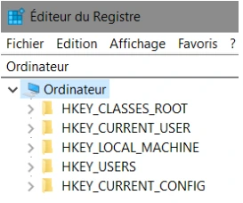
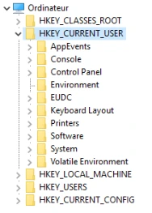
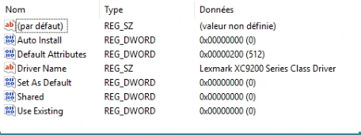
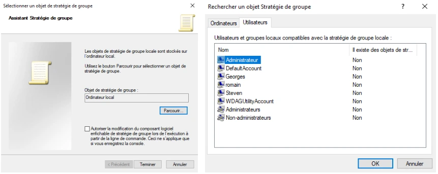
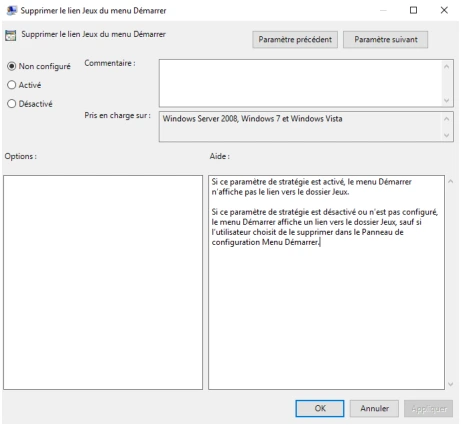

Transcription du document du dossier TSSR, adaptée à une lecture Web. Les compléments pédagogiques figurent dans leur onglet distinct.
Les stratégies de groupe local
Systèmes clients Microsoft — Module 13.
Objectifs
Les stratégies de groupe local pour :
personnaliser l’environnement des utilisateurs ;
personnaliser Windows 10 ;
sécuriser le système.
La base de registre Windows
Base de données hiérarchique et centrale.
Stocke toutes les informations de configuration du système pour un ou plusieurs utilisateurs, programmes et périphériques matériels.
Utilisée depuis Windows 98.
Contient des milliers de paramètres.
Lors de son exécution, Windows consulte en permanence les informations contenues dans le Registre.
Consultation et modification du registre : commande regedit.
À manipuler avec la plus grande précaution.
Cinq catégories (ou ruches)
Catégorie
Informations
HKEY_CLASSES_ROOT
Informations sur les applications : objets OLE, extensions.
HKEY_CURRENT_USER (HKEY_USERS\SID)
Configuration relative à l’utilisateur qui a ouvert une session.
HKEY_LOCAL_MACHINE
Informations de configuration spécifiques à l’ordinateur, pour n’importe quel utilisateur.
HKEY_USERS
Tous les profils utilisateur chargés activement sur l’ordinateur.
HKEY_CURRENT_CONFIG
Profil matériel utilisé par l’ordinateur.

Capture du support — Les cinq catégories affichées dans l’Éditeur du Registre.
La base de registre Windows
Les ruches contiennent des clés, qui peuvent elles-mêmes contenir des clés…
Les clés contiennent des valeurs : binaires ou hexadécimales ; chaînes de caractères.
Chaque valeur correspond à un paramètre du système.
LGPO
Les LGPO (Local Group Policy Object) :
gèrent le comportement du poste de travail et des utilisateurs avec une seule et même console : console MMC personnalisée et composant logiciel enfichable Éditeur d’objets de stratégie de groupe ; console MMC Stratégie de sécurité locale (secpol.msc) ;
réduisent le temps consacré à la gestion du poste de travail ;
agissent sur la base de registre de façon plus conviviale.
Concrètement que peut-on faire par LGPO ?
Modifier les stratégies de mots de passe.
Agir sur les privilèges d’administration du système.
Uniformiser l’aspect du poste de travail : bureau, barre des tâches.
Restreindre l’accès à certains paramètres : panneau de configuration, ligne de commande.
Démarrer des scripts à l’ouverture et à la fermeture de session utilisateur.

Capture du support — Clés et sous-clés du registre.

Capture du support — Nom, type et données des valeurs du registre.
LGPO — cibles et paramètres
Possibilité d’agir sur le poste local ou sur un poste distant.
Possibilité d’agir sur différents objets de la base SAM.
Chaque paramètre
Peut être activé ou désactivé.
Peut être non configuré : comportement par défaut du système.
Peut être commenté.
Possède des conditions.
Peut posséder des options supplémentaires.
Possède surtout une aide précieuse : lisez-la !

Capture du support — Sélection d’un ordinateur et d’un objet utilisateur dans la console LGPO.

Capture du support — Paramètre LGPO : état, commentaire, conditions, options et aide.
Démonstration
TP
Conclusion
Bien connaître le fonctionnement des stratégies de groupe local pour :
découvrir la base de registre : paramètres utilisateurs, paramètres ordinateurs, stratégies de sécurité ;
se préparer à l’utilisation des stratégies de groupe de domaine.